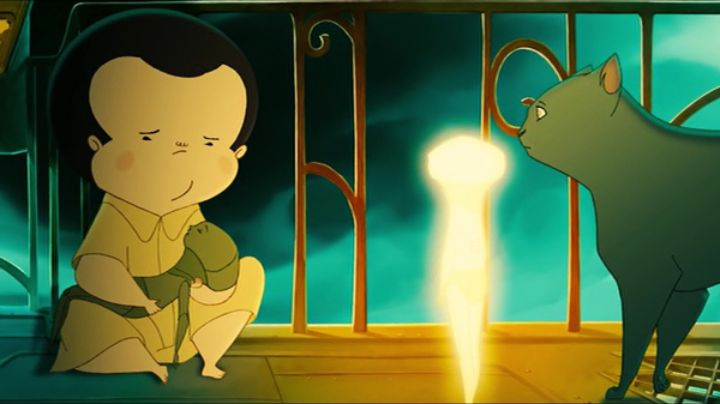

I distinctly remember when I first found out about the 2007 Spanish animated film "Nocturna." It was in a preview article from Animation Magazine, which was briefly sold in my local University's bookstore. The screenshots showed an unusual art design of rounded characters, and promised a uniquely magical family film. The magazine introduced a few foriegn movies I had never heard of anywhere else, opening my eyes to how much is produced around the world... it was a sad realization, since most of these films and shows never get released outside their home countries.Miraculously, GKIDS came in for the rescue, even though it was nearly a decade after the original release. So I got to see, and own a copy of, "Nocturna" after all. And I didn't know exactly what to expect, eagerly hoping it would surprise me. And it did. I was surprised to find a family film, in the tradition of American animated films, aimed squarely at children, with a very by-the-numbers plot. This was a slight disappointment, improved with how original the setting and premise was.The story starts with Tim, a young boy who lives at a large orphanage in an unspecified old-style town (looks inspired by Spain or Italy to me). For the most part, the kids play freely in the large mansion, with little supervision from the adults. Tim has one problem he has trouble dealing with though; he's afraid of the dark. It's a common problem many children have, and like any good children's movie, the adventure he goes on is a big metaphor forcing him to overcome that fear.After a squable with some other kids, Tim has trouble sleeping without being able to open the window to the night sky, so he heads outside. He then recognizes that the night stars, including his favourite one, are disappearing! Just then, a top-heavy creature followed by a parade of cats storms in, asking why Tim isn't in bed like he's supposed to be. He's a "cat shepard," and herds the cats that each are responsible for overseeing that the children of the town go to sleep. This is just one part of a massive hidden world that Tim is about to discover, the secret world of "Nocturna," fantastical creatures that work during the night to help children sleep, give them good dreams, give them bed-head hair, and misplace their socks. The setting is the backdrop to find out the mystery of the missing stars, slowly unveiling a internal conspiracy.It's an original premise that feels a bit less original in execution. It's like a cross between the factory-floor and wonder of "Monsters Inc." or "The Polar Express," with the aliens of "Treasure Planet," and the animation and dialogue style of those 2D Dreamworks movies, or possible Disney's "Tarzan." Basically, films that already exist, specifically American films. That's not an easy thing to mimic well, and it makes the film a little more accessible to more families, but it's also at odds to the otherwise original premise and art-style. For a film that evokes Tim Burton and Guillermo Del Toro, I was expecting something more... original? Exotic? Not a friendly dream monster writing a dream about forgetting to wear pants to school for the umpteenth time.I'd be lying if I said I didn't smile at the diverse cast of colorful characters, each with their own design, personality and jokes. But as a film focused on wonder and discovery, it starts slow and meanders a bit as Tim and the Cat Shepard run across the rooftops of the cityscape, coming across yet another group of cute but meaningless actors on their fetch quest. It isn't until the final third that the plot reveals itself, but I wasn't all that invested by the time the humdrum ending came around. That final act heavily features a large shadow monster, the only real source of danger in the movie, which might be a bit scary for children. Otherwise, I suspect kids will be into the movie's story more than I was.  Of course, the animation and visuals are the big draw for watching "Nocturna." The animation itself is of high quality, but also a bit rough in motion. It's like watching an award-winning independent film's animation showcase, not quite being at the level you'd want from a theatrical film, but a marvel for fans of the medium anyway, and a love-letter to 2D animation (what 3D animation is used, is well composited and enhances the movie's more exciting scenes). The visuals are distinct, with massive heads and small eyes and mouths, and knobly arms and legs. The kids look like Italian versions of Charlie Brown and the "Peanuts" gang. It doesn't always work well; the kids in particular looked strange to me, as refreshingly distinct as they were. The "Nocturna" inhabitants were better designs, the Cat Shepard in particular; I suspect his design was the first thing decided on before the film started production, and it's easy to see why he'd be the poster-character in any marketing. Overall, it's that refreshing uniqueness that sells the movie, and I'd love to have an artbook from the film.The music was good, although it reminded me heavily of Danny Elfman, a common go-to composer in Hollywood. Again, I was disappointed to not have something more original, but what was I expecting? The soundtrack is fitting, whatever your opinion.GKIDS released the film with an English dub, apparently one recorded from the UK release several years prior. Curiously, the original Spanish dub wasn't included on the disc, a bit of a disappointment... and it's not easy to find evidence of that original Spanish acting either, but it does appear to exist. When watching the film with British actors, I couldn't help but notice how the detailed mouth movements in most scenes (but not all) closely matched with the dub; I suspect the animators went so far as to re-animate lip-flaps for an international audience, which would explain the impossibility of including both languages on the same disc. Anyway, the English dub is very... English, and didn't work great for the children, a shame since Tim is such a prominent character. Even worse, the dialogue isn't mixed well, and often gets drowned out from sound effects and the soundtrack. But I appreciated the acting for most of the adult-oriented characters, almost on par with a good Disney movie, so I grew to accept it as the film went on. Most caveats I have with "Nocturna" come from unrealistic expectations, swelled after many years of being unable to watch the movie. It's actually pretty good. For children who might not be interested in anything that doesn't have Disney's name on it, it's surprisingly good. But this was a strange project that showed that foreign design, and American-style writing, don't mix all that well, no matter how good either might be.
- "Ani" More reviews can be found at : https://2danicritic.github.io/ Previous review: review_No_Game_No_Life_-_Zero Next review: review_Noragami